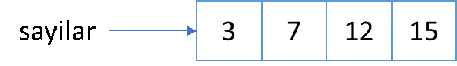
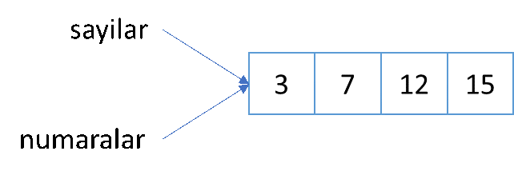
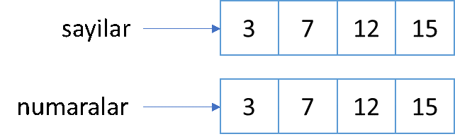

4. Veri Yapıları#
Önceki bölümde, integer, string gibi temel veri türlerini gördük. Bunlar tekil verilerin alabileceği türleri ifade ediyor. Yani bu veri türleri, tek bir verinin hangi tipte olabileceğini gösterir. Gerçekte, neredeyse hiçbir zaman tek tek verilerle uğraşmayız. Verilerin bir araya gelerek oluşturduğu veri yapıları ile çalışırız. Bu veri yapıları, dizi, tablo küme hatta yığın şeklinde olabilir. Bu nedenle, birden fazla veriyi bir arada tutmak için kullanılan veri yapıları vardır. Bunları basitçe veri dizileri olarak isimlendirebiliriz. Veri dizilerini çok sayıda veriyi bir arada tutmak ve bunlarla istediğimiz işlemleri gerçekleştirmek için kullanabiliriz. Veri dizilerinin bir kısmı oluşturulduktan sonra değiştirilebilirken (mutable) bazı veri dizileri ise bir defa oluşturulduktan sonra değiştirilemez (immutable). Örneğin, liste, küme ve sözlük veri yapıları değiştirilebilir veri dizileri iken tuple veri yapıları değiştirilemez türde verilerdir.
Bir sınıftaki öğrencilerin notlarını aşağıdaki gibi farklı değişkenlere atayarak saklayabiliriz.
not_Eren = 100
not_Ilhan = 99
not_Ali = 98
not_Erman = 97
not_Mehmet = 96
Tahmin edeceğiniz gibi verilerle bu şekilde işlem yapmak çok zor. Veri sayısı arttıkça zorluk da artacaktır. Sözgelimi 1000 öğrencinin notunu saklamak ve incelemek için 1000 farklı değişken tanımlamak son derece güç olacaktır. Bunun yerine, tüm notları bir arada tutacak bir veri yapısına ihtiyacımız var. Bu veri yapılarının belirli bir biçimde olması da gerçekleştireceğimiz işlem ve analizleri kolaylaştıracaktır. Örneğin, notları aşağıdaki gibi farklı biçimlerde saklamayı deneyebiliriz.
notlar =(not_Eren, not_Ilhan, not_Ali, not_Erman, not_Mehmet)
isimler = {"Eren", "Ilhan", "Ali", "Erman", "Mehmet"}
notlar = [100, 99, 98, 97, 96]
veya
notlar = {"Eren": 100, "Ilhan": 99, "Ali": 98, "Erman":97, "Mehmet":96}
ya da
İsim |
Not |
|---|---|
Eren |
100 |
Ilhan |
99 |
Ali |
98 |
Erman |
97 |
Mehmet |
96 |
Verileri bu şekilde gruplayarak her bir veriye değişken atamak yerine tüm verilerin bir arada olduğu veri yapısına bir değişken ismi atayabiliriz. Ayrıca, veriler üzerindeki işlemleri her birine ayrı ayrı değil topluca gerçekleştirebiliriz.
Her programlama dilinin kendine özgü veri yapıları vardır. Bu ve bundan sonraki bölümlerde Python’da kullanılan veri yapılarını tanıyacağız. Bunlardan ilki de list yani liste veri yapısıdır.
4.1. List (Liste) Veri Yapısı#
Liste, isminden de anlaşılacağı üzere sıralı nesnelerden oluşan liste ya da dizilerdir. Listelerde yer alan veriler köşeli parantez [ ] içinde ve virgülle ayrılarak gösterilir. Listeler veriyi eklenme sırasına göre tutan ve içeriği sonradan değiştirilebilen veri yapılarıdır. Bir listeyi tanımladıktan sonra listenin bir veya daha fazla elemanını güncellemek mümkündür.
Listenin elemanları önceki bölümde gördüğümüz veri tiplerinden herhangi birisi olabilir. Bir listenin elemanları farklı veri tipinde de olabilir. Hatta, bir listenin elemanları farklı listeler de olabilir.
liste1 = [41, 42, 43, 44, 45]
liste1
[41, 42, 43, 44, 45]
liste2 = ["abc", "def", "xyz", "ijk"]
liste2
['abc', 'def', 'xyz', 'ijk']
liste3 = [123, 456, "klm", "xyz"]
liste3
[123, 456, 'klm', 'xyz']
Bölüm başında verdiğimiz notlar örneğini bir liste içinde aşağıdaki şekillerde yazmak da mümkündür.
notlar1 = ["Eren",100, "Ilhan",99, "Ali",98, "Erman",97, "Mehmet",96]
notlar1
['Eren', 100, 'Ilhan', 99, 'Ali', 98, 'Erman', 97, 'Mehmet', 96]
notlar2 = [['Eren',100],
['Ilhan',99],
['Ali',98],
['Erman',97],
['Mehmet',96]]
notlar2
[['Eren', 100], ['Ilhan', 99], ['Ali', 98], ['Erman', 97], ['Mehmet', 96]]
notlar3 = [["Eren", "Ilhan", "Ali", "Erman", "Mehmet"],
[100, 99, 98, 97, 96]]
notlar3
[['Eren', 'Ilhan', 'Ali', 'Erman', 'Mehmet'], [100, 99, 98, 97, 96]]
Yukarıda verilen örneklerde, birinci liste tamsayı, ikinci liste metin, üçüncü liste ise hem tamsayı hem de metin tipi verilerden oluşmaktadır. Boş bir liste oluşturmak için içi boş köşeli parantezler kullanılır: liste = [] gibi.
Liste içinde değişken ismi de kullanabiliriz.
notlar = [not_Eren, not_Ilhan, not_Ali, not_Erman, not_Mehmet]
notlar = ["Eren", not_Eren, "Ilhan", not_Ilhan, "Ali", not_Ali,
"Erman", not_Erman, "Mehmet", not_Mehmet]
Bir listenin veri tipi list olarak belirtilir. Bunu type() fonksiyonu ile görebiliriz.
liste = [12, 33, 45, 76, 35, 43, 18, 6, 7]
print(type(liste))
print(len(liste))
<class 'list'>
9
Peki, listede yer alan verilerin bir kısmına nasıl erişebiliriz. Bir listenin elemanları sıfırdan başlayacak şekilde numaralandırılmıştır. Bir verinin listedeki sıra numarasına verinin indeksi de denir.
Dikkat edilmesi gereken bir nokta, Python’da sıra numaralarının sıfır ile başlamasıdır. Bir listenin ilk elemanı 0, ikinci elemanı 1, üçüncü elemanı 2 sıra sayısını alır. Python’da sıfırla başlayan sıralama düzeni konusunda dikkatli olunmalıdır. Bir listenin herhangi bir sıradaki elemanını görmek için liste yanında köşeli parantez içinde sıra numarası yazılır. Yukarıdaki liste3 listesini ele alalım.
liste3[0]
123
liste3[1]
456
liste3[2]
'klm'
liste3[3]
'xyz'
type(liste3[0])
int
type(liste3[2])
str
Bir listenin elemanlarına liste sonundan başlayarak da erişebiliriz. Listenin ilk elemanının sıra numarasının sıfır olduğunu söylemiştik. Liste elemanlarını sondan başa numaralandırmak içinse sondaki eleman -1, ondan bir önceki eleman -2, bir önceki -3 sıra numarası veririz.
liste = [4, 7, 9, 12, 15, 19]
liste[-1]
19
liste[-2]
15
liste[-3]
12
Şimdiye kadar sadece listedeki bir elemana erişmek için gerekli yazım şeklini gördük. Peki birden fazla elemana erişmek için ne yazmamız gerekir? Örneğin, listedeki 2 ve 5 sıra sayısına sahip elemanları çekmek için ne yazmamız gerekir? Ardışık sıra numaralarını belirtmek için iki nokta (:) işareti kullanılır.
Ancak, listede : işaretini kullanarak birden fazla elemana erişirken bir noktaya çok dikkat edilmelidir. Örneğin yukarıdaki listeyi ele alalım. Listenin 2, 3, ve 4 sıra numarasına sahip elemanlarını görmek için ne yazmalıyız? İlk verinin sıra numarasının 0 olduğunu unutmayın. Bu durumda listedeki 2,3 ve 4 sıra numarasına sahip veriler 9, 12 ve 15 oluyor? Akla gelen ilk cevap liste[2:4] yazmaktır. Ancak aşağıda liste[2:4] yazdığımızda ne çıktığına bakalım.
liste = [4, 7, 9, 12, 15, 19]
liste[2:4]
[9, 12]
Bir listeden ardışık elemanları çekerken liste[a:b] yazdığımızda a sıra numarası ile başlayan ve b sıra numarası ile biten verilerin gelmesini bekleriz. Ancak, b sıra numarasındaki veri işleme dahil edilmez. Ondan bir önceki veri alınır. Yani, liste[2:4] yazdığımızda 2. ve 3. sıradaki elemanlar gelir ama 4. sıradaki eleman dahil edilmez. Bu nedenle istediğimiz en son sıranın bir fazlasını yazmamız gerekir. Örneğin, yukarıdaki listenin ilk 3 elemanını almak için hangi indeks numaralarını yazmak gerekir? İlk üç elemanın indeks numaraları 0, 1 ve 2’dir. İstediğimiz ilk elemanın indeks numarasını ve son elemanın indeks numarasının bir fazlasını yazmamız gerektiğini hatırlayalım.
liste[0:3]
[4, 7, 9]
(:) işaretinin soluna herhangi bir sayı yazılmazsa, burada sıfır olduğu varsayılır. Yani liste[:3] ile liste[0:3] aynı anlama gelmektedir.
liste[:3] == liste[0:3]
True
Benzer şekilde (:) işaretinin sağına herhangi bir sayı yazılmazsa, listenin sonuna kadar bütün veriler alınır. Örneğin, liste[3: ] yazıldığında, 3 sıra numarasına sahip veriden başlayarak liste sonuna kadar tüm veriler çekilir.
liste[3:]
[12, 15, 19]
Üçüncü olarak sayıların kaçar atlanarak seçileceğini gösteren bir sayı yazabiliriz. Örneğin, liste[a:b:k] yazdığımızda, a sıra numarasından başlayıp b-1 sıra numarasında biten ve k atlayarak giden bir seçim yapılmasını isteriz. Aşağıdaki örnekte, listede 3. sıra numarasında başlayıp 11. sıra numarasına kadar, ikişer atlayarak giden bir seçim yapıyoruz.
liste = [4, 7, 9, 12, 15, 19, 3, 6, 8, 12, 13, 11, 2, 5, 9]
liste[3:12:2]
[12, 19, 6, 12, 11]
Şimdi de daha önceki örneklerde gördüğümüz listelerden oluşmuş listeyi dikkate alalım. Listenin içindeki listelerin elemanlarına nasıl erişebiliriz?
notlar = [['Eren', 100],
['Ilhan', 99],
['Ali', 98],
['Erman', 97],
['Mehmet', 96]]
notlar[0]
['Eren', 100]
notlar[2]
['Ali', 98]
notlar[-1]
['Mehmet', 96]
Liste ismi ile endekslediğimizde beklenen şekilde liste içindeki listelere erişiyoruz. Peki, örneğin 2. sıradaki listenin ikinci elemanına erişmek istersek ne yapmamız gerekir? Dikkat ederseniz, notlar[1] şeklinde belirtilen verinin kendisi de bir listedir. O halde bu listenin içindeki bir elemana erişmek için yanına bir [ ] daha getirmek gerekir. Diyelim ki ana listenin 2. sırasındaki alt listedeki ismi ve notu görmek istiyoruz. İkinci sıradaki elemanın indeks değerinin 1 olduğunu hatırlayalım.
notlar[1][0]
'Ilhan'
notlar[1][1]
99
(isim, puan) = (notlar[1][0], notlar[1][1])
isim
'Ilhan'
puan
99
Yukarıda da bahsettiğimiz gibi bir listenin elemanları değiştirilebilir. Yani, herhangi bir sıradaki değeri farklı bir değerle değiştirebiliriz. String ya da bytes veri tipinde bunun mümkün olmadığını hatırlayalım. Bir listenin herhangi bir elemanını değiştirmek için basitçe liste adı ile birlikte köşeli parantez içinde ilgili sıra numarasını yazdıktan sonra eşittir işareti kullanarak buraya atamak istediğimiz değeri yazarız.
liste = [1, 2, 3, 4]
liste[3] = 10
liste
[1, 2, 3, 10]
liste[0] = "sayılar"
liste
['sayılar', 2, 3, 10]
Bir listedeki herhangi bir elemanın hangi sırada olduğunu yani indeks numarasını öğrenmek için .index() metodunu kullanabiliriz.
notlar = ['Eren', 100, 'Ilhan', 99,
'Ali', 98, 'Erman', 97,
'Mehmet', 96]
notlar.index('Ali')
4
notlar.index(98)
5
Belirli bir sıradaki elemanı listeden silmenin bir yöntemi de .pop() yöntemini kullanmaktır. Bu metod istenen elemanı listeden çıkarırken aynı zamanda elemanı farklı bir değişken adı ile kaydetmeye de izin verir.
liste = ['A', 'B', 'C', 'D', 'E']
print("liste: ", liste)
sil = liste.pop(3)
print("silinen değer: ", sil)
print("liste: ", liste)
liste: ['A', 'B', 'C', 'D', 'E']
silinen değer: D
liste: ['A', 'B', 'C', 'E']
Bir listedeki herhangi bir elemanın sayısını görmek için .count() metodu kullanılabilir. Aşağıdaki örnekte, olçum_degerleri listesinde 3 adet 4 sayısının yer aldığı görülmektedir.
olcum = [1, 3, 6, 9, 3, 4, 4, 7, 8, 2, 4, 2, 1]
olcum.count(4)
3
Listede olmayan bir sıra numarasına atama yapmayı denerseniz aşağıdaki gibi bir hata mesajı alırsınız.
liste[4] = 15
Traceback (most recent call last):
File "<stdin>", line 1, in <module>
IndexError: list assignment index out of range
Bu örnekte gördüğümüz gibi listenin olmayan sıradaki elemanına doğrudan atama yapmak mümkün değildir. Ancak bir listeye yeni eleman atamak için .append() metodu kullanılabilir.
print("liste: ", liste)
liste.append (12)
print("liste: ", liste)
liste.append (15)
print("liste: ", liste)
liste: ['A', 'B', 'C', 'E']
liste: ['A', 'B', 'C', 'E', 12]
liste: ['A', 'B', 'C', 'E', 12, 15]
Listeye yeni veri eklemenin daha kolay bir yolu da + operatörünü kullanmaktır. İki liste arasında + işareti kullanıldığında, Python bu iki listeyi arka arkaya ekleyip yeni bir liste oluşturur.
sayilar = [3, 7, 12, 15]
print(sayilar)
sayilar + [19, 23]
[3, 7, 12, 15]
[3, 7, 12, 15, 19, 23]
notlar + ["İlker", 76]
['Eren', 100, 'Ilhan', 99, 'Ali', 98, 'Erman', 97, 'Mehmet', 96, 'İlker', 76]
İki listeyi birleştirmenin bir başka yolu da .extend() metodunu kullanmaktır.
liste1 = [1, 2, 3, 4]
liste2 = ['bir', 'iki', 'üç', 'dört']
liste1.extend(liste2)
print(liste1)
[1, 2, 3, 4, 'bir', 'iki', 'üç', 'dört']
Görüldüğü gibi .extend() metodu + operatöründen farklı olarak uygulandığı listeyi otomatik olarak güncelliyor.
Bir listedeki elemanı silmek içinse del() fonksiyonu kullanılır.
sayilar
[3, 7, 12, 15]
del(sayilar[3])
sayilar
[3, 7, 12]
Listeden eleman silmenin bir başka yolu da .remove() metodunu kullanmaktır. Bu metod, verilen elemanı listede ilk gördüğü yerde siler. Burada dikkat edilmesi gereken nokta eğer silinmesi istenen eleman listede birden fazla ise sadece ilki silinir. Diğerlerine dokunulmaz.
notlar = [100, 93, 86, 78, 52, 45, 95, 100]
notlar.remove(100)
notlar
[93, 86, 78, 52, 45, 95, 100]
Liste elemanlarını sıralamak için sorted() fonksiyonu kullanılır.
liste = [3, 7, 2, 11, 3, 7, 9, 5, 18, 4]
sorted(liste)
[2, 3, 3, 4, 5, 7, 7, 9, 11, 18]
Sıralamayı büyükten küçüğe yapmak içinse fonksiyonda reverse = True argümanı kullanılır.
sorted(liste, reverse=True)
[18, 11, 9, 7, 7, 5, 4, 3, 3, 2]
Bir listenin elemanlarını tersten yazdırmak için .reverse() metodu kullanılır.
notlar.reverse()
notlar
[100, 95, 45, 52, 78, 86, 93]
Python’da bir liste oluşturduğumuzda bu liste bilgisayar hafızasında saklanır. Bu listeye isim verdiğimizde, bu isim aslında listedeki verileri içermez. Listedeki verilerin geçici hafızada saklandığı adresi gösteren bir işaret görevi görür.

Diyelim ki yeni bir liste oluşturup sayilar listesini bu listeye atamak istiyoruz.
numaralar = sayilar
numaralar
[3, 7, 12]
Bu durumda, sayilar listesi ile aynı adresi gösteren bir numaralar listesi oluşturmuş oluyoruz.

Peki bunun anlamı nedir? Bu iki liste aynı adresi işaret ettiğinden, bunlardan birinde yapılan bir değişiklik diğerini de etkiler. Örneğin sayılar listesinin ilk elemanını 5 yapalım. Bu durumda numaralar listesinin de ilk elemanı 5 olur. Çünkü iki değişken de aynı adresi göstermektedir.
sayilar[0] = 999 # listenin ilk elemanını 999 yaptık
print(sayilar) # sayilar listesi değişti
[999, 7, 12]
print(numaralar) # ama numaralar da değişti
[999, 7, 12]
Bir listeyi aynı şekilde başka bir listeye kopyalamak ve iki değişkenin farklı listeleri göstermesini istersek ne yapabiliriz? Listeyi farklı bir adreste aşağıdaki gibi kopyalamamız gerekiyor.

Listenin yukarıdaki şekilde yeni bir kopyasını oluşturmanın iki yolu vardır.
numaralar = sayilar[:]
numaralar = list(sayilar)
Listenin kopyasını yukarıdaki şekilde oluşturduğumuzda, listeler farklı adresleri gösterir. Bu nedenle bunlardan birinde yapılan değişiklik diğerini etkilemez.
sayilar[0] = 0
sayilar
[0, 7, 12]
numaralar
[999, 7, 12]
4.2. Tuple (Demet) Veri Yapısı#
Bir başka veri yapısı olan tuple, listelere çok benzer. Listeler gibi verileri aldıkları sırada saklar ve saklanan veriye indeks numarası ile erişmek mümkündür. Ancak listelerden farklı olarak bir defa tanımlandıktan sonra tuple veri yapısındaki değerleri değiştirmek mümkün değildir. Bu nedenle, oluşturulan bir verinin kesinlikle değiştirilmemesi gereken zamanlardan tuple veri yapısı daha güvenilirdir. Bu özellik, veri güvenliği ve korunmasının gerekli olduğu işlerde çok faydalıdır. Yaptığınız işlerde veya projelerde, bilinçli veya bilinçsiz olarak değiştirilmesini istemediğiniz verileri tuple verisi olarak tanımlayıp olası hataların önüne geçebilirsiniz.
Tuple veri yapısının listelerden bir diğer farkı da listeler köşeli parantezle gösterilirken, tuple veri yapısının normal parantezle tanımlanmasıdır. Tuple veri yapısı tıpkı listeler gibi ancak normal parantez kullanılarak oluşturulur.
tuple1 = (3.14, 2.78, 5.67, 2.18)
tuple2 = ("İstanbul", "Ankara", "İzmir", "Bursa", "Adana")
tuple3 = ("Fizik", "Matematik", "Kimya", 100, 99, 97)
Görüldüğü gibi tuple veri yapısı da listeler gibi farklı türde verileri içerebilir. Tuple veri yapısı da diğer Python’daki diğer verilerde olduğu gibi sıfır indeks numarası ile başlar.
print(tuple1[0])
print(tuple2[1:3])
3.14
('Ankara', 'İzmir')
Yukarıda da belirttiğimiz gibi tuple verilerini tanımladıktan sonra bunlarda değişiklik yapmak mümkün değildir. Aynı şekilde tuple nesnelerine veri eklemek ya da bunlardan veri silmek de mümkün değildir.
tuple2[4] = "Mersin"
TypeError: 'tuple' object does not support item assignment
Bir tuple nesnesinin içeriğini de farklı değişkenlere atamak mümkündür.
tuple1 = (3.14, 2.78)
pi, e = tuple1 # ya da pi, e = 3.14, 2.78
print(pi)
print(e)
3.14
2.78
Yukarıdaki örnekte dikkat etmemiz gereken nokta tuple nesnesindeki veri sayısı kadar değişken kullanmamız gerektiğidir. Daha az veya daha fazla sayıda değişken girersek hata mesajı ile karşılaşırız.
tuple2 = (7,8,9)
a, b = tuple2
ValueError: too many values to unpack (expected 2)
a, b, c, d = tuple2
ValueError: not enough values to unpack (expected 4, got 3)
4.3. Set (Küme) Veri Yapısı#
Veri nesnelerini herhangi bir sıralama olmaksızın ve her nesneden sadece bir tane olacak şekilde kaydetmek istersek set (küme) veri yapısını kullanabiliriz. Set veri yapısı adını matematikteki küme tanımından almıştır. Tıpkı matematikteki küme tanımı gibi bu veri yapılarında her veriden sadece bir tane bulunur ve verilerin sırası önemli değildir. Set veri yapısı da Listeler gibi sonradan değiştirilebilir (mutable) verilerdir. Set (küme) veri yapısı oluşturmak için set() fonksiyonu kullanılır. Örneğin, alışveriş listenizi bir set veri yapısı olarak kaydettiğinizi varsayalım.
alisveris_listesi = set(['ekmek', 'süt', 'yoğurt', 'pirinç', 'bal', 'meyve', 'ekmek', 'süt', 'bal'])
alisveris = set(alisveris_listesi)
print(alisveris)
{'pirinç', 'yoğurt', 'meyve', 'ekmek', 'bal', 'süt'}
Gördüğünüz gibi orijinal listede tekrar eden elemanlar olduğu halde set() fonksiyonu ile oluşturduğunuz küme verisinde bunlar birer kez yazılıyor. Ayrıca, yukarıdaki kodu birkaç kez çalıştırırsanız, sıralamanın her defasında farklı olduğunu görürsünüz.
Bir kümeye yeni bir eleman eklemek için .add() metodu kullanılır. Hazırladığınız alışveriş listesinde eksik bir şey olduğunuz fark ettiniz ve bu malzemeyi eklemeniz gerekiyor.
alisveris.add('deterjan')
print(alisveris)
{'pirinç', 'yoğurt', 'meyve', 'deterjan', 'ekmek', 'bal', 'süt'}
Sonradan eklediğiniz malzemenin en sonda çıkmadığına dikkat etmişsinizdir. Çünkü küme veri yapılarında listeler ve demetlerin aksine sıralama önemli değildir. Bu nedenle, .add() metodu ile zaten kümede olan bir veriyi eklemek isterseniz küme içeriğinde herhangi bir değişiklik meydana gelmez.
Kümeye, birden fazla eleman eklemek için .update() metodu kullanılır. Bu metodla kümeye bir liste iletilir. Listedeki elemanlar kümede yoksa eklenir, zaten varsa herhangi bir değişiklik olmaz.
yeni_malzemeler = ['sebze', 'gazete', 'dergi']
alisveris.update(yeni_malzemeler)
print(alisveris)
{'deterjan', 'ekmek', 'gazete', 'bal', 'dergi', 'yoğurt', 'meyve', 'sebze', 'süt', 'pirinç'}
Listeden bir eleman çıkarmak için .discard() metodu kullanılır. Markete gittiniz ve girişte bulunan reyondan ekmek aldınız. Listeyi güncellemeniz gerekiyor.
alisveris.discard('ekmek')
print(alisveris)
{'deterjan', 'gazete', 'bal', 'dergi', 'yoğurt', 'meyve', 'sebze', 'süt', 'pirinç'}
Şimdi de alışveriş kümesinden rastgele bir ürün seçip onu satın almak istiyorsunuz. Seçilen ürün aynı zamanda alışveriş kümesinden çıksın. Bunun için daha önce de gördüğümüz .pop() fonksiyonu kullanılır.
print(alisveris.pop())
print(alisveris)
deterjan
{'gazete', 'bal', 'dergi', 'yoğurt', 'meyve', 'sebze', 'süt', 'pirinç'}
Küme veri yapısının matematikteki küme tanımına çok benzediğini söylemiştik. Buradan hareketle kümelerde yapılan bileşim, kesişim gibi işlemler Python’da küme verileri için de geliştirilmiştir. İki küme verisinin bileşimini bulmak için .union() işlemi kullanılır.
alisveris1 = set(['ekmek', 'süt', 'yoğurt', 'peynir'])
alisveris2 = set(['bal', 'şeker', 'tuz', 'ekmek', 'süt'])
alisveris1.union(alisveris2)
{'bal', 'ekmek', 'peynir', 'süt', 'tuz', 'yoğurt', 'şeker'}
Benzer şekilde iki kümenin kesişimini bulmak için de .intersection() metodu kullanılır.
alisveris1.intersection(alisveris2)
{'ekmek', 'süt'}
Son olarak iki kümenin farkını bulmak için .difference() metodu kullanılır.
print(alisveris1.difference(alisveris2))
print(alisveris2.difference(alisveris1))
{'yoğurt', 'peynir'}
{'bal', 'şeker', 'tuz'}
4.4. Dictionary (Sözlük) Veri Yapısı#
Dictionary ya da sözlük veri yapısı adından da anlaşılacağı üzere anahtar kelimelere değerlerin atandığı sözlük benzeri yapılardır. Diğer dillerde çok fazla rastlanmasa da sözlükler Python’da en fazla kullanılan veri yapılarındandır. Nasıl ki bir sözlükte her sözcüğün karşısında bir açıklama yazıyorsa dict veri yapısında da her bir anahtar kelimenin karşısında yazan bir değer vardır. Diğer bir deyişle, dictionary, her bir değere bağlı bir anahtar kelimenin olduğu yapılardır. Hem anahtarlar hem de veriler herhangi bir veri tipinde olabilir. Hatta anahtar : değer ikilisindeki değer bir başka sözlük de olabilir. Sözlüklerin anahtar : değer ikilileri ayrıca birer tuple veri nesnesi oluşturur. Sözlük veri yapısının avantajı bu tür veri yapıları ile çok hızlı işlem yapılabilmesidir.
Bir sözlük veri nesnesi oluşturmak için dict() fonksiyonu ya da küme parantezi, { }, kullanılabilir. Hisse senedi fiyatlarını takip ettiğimizi ve hisse isimlerini bir listede, hisse fiyatlarını da farklı bir listede kaydettiğimizi varsayalım.
hisse = ['ABCD', 'KLMN', 'ZTLM', 'XYZT']
fiyat = [17.70, 9.59, 28.70, 7.05]
Bir hisse senedinin fiyatını görmek ya da fiyatta değişiklik yapmak için önce bu hisse senedinin hisse listesindeki sıra numarasını bulmak, sonra da fiyat listesindeki bu sıra numarasına denk gelen kayda ulaşmak gerekiyor. Bu da zaman kaybına yol açan bir işlem olacaktır. Bunun yerine hisse isimleri ile fiyatlarını bir arada tutmaya izin veren sözlük veri yapısını kullanabiliriz. Tanımlayacağımız sözlükte hisse isimleri anahtar, fiyatları ise değer olarak yer alacaktır.
Listelerin köşeli parantezler ile oluşturulduğunu önceki bölümde görmüştük. Sözlükler ise küme parantezleri { } kullanılarak oluşturulur. Küme parantezi içinde, anahtar kelime tırnak işareti içinde yazılıp iki noktadan sonra anahtar kelimenin aldığı değer yazılır. Farklı anahtar – değer ikilileri de birbirlerinden virgülle ayrılır.
Yukarıda tanımladığımız hisse ve fiyat listelerini tek bir sözlük içinde tanımlayalım.
hisseler = {
'ABCD' : 17.70,
'KLMN' : 9.59,
'ZTLM' : 28.70,
'XYZT' : 7.05
}
hisseler
{'ABCD': 17.7, 'KLMN': 9.59, 'ZTLM': 28.7, 'XYZT': 7.05}
Bir anahtarın sözlükte yer alıp almadığını görmek için 'anahtar' in sozluk yazımını kullanabiliriz. Bu kod True ya da False sonucunu verir.
'XYZT' in hisseler
True
'ABXY' in hisseler
False
Yukarıdaki ifadelerin tersini de 'anahtar' not in sozluk ifadesi ile görmek mümkündür. Yani bu ifade, anahtar sözlükte değilse True, sözlükte ise False değerini alacaktır.
'UVYZ' not in hisseler
True
'ABCD' not in hisseler
False
Sözlükteki bir değere ulaşmak için bu değerin anahtarını yazmak gerekir.
hisseler['ABCD']
17.7
hisseler['XYZT']
7.05
Sözlükte olmayan bir veriyi eklemek için de yukarıdaki yazım şekli kullanılabilir. Örneğin, hisseler sözlüğüne yeni bir hisse senedi ve fiyatını ekleyelim.
hisseler['DEFG'] = 18.75
print(hisseler)
{'ABCD': 17.7, 'KLMN': 9.59, 'ZTLM': 28.7, 'XYZT': 7.05, 'DEFG': 18.75}
Sözlükte olmayan bir anahtara erişmek istediğimizde hata mesajı ile karşılaşırız.
print(hisseler['UVYZ'])
KeyError: 'UVYZ'
Aradığımız anahtar sözlükte olmasa dahi hata mesajı almamak ya da istediğimiz mesajı almak için .get() metodu kullanılabilir.
print(hisseler.get('UVYZ'))
None
Get metoduna ikinci argüman olarak aranan nahtarın bulunamaması halinde istediğimiz mesajı da yazabiliriz.
print(hisseler.get('UVYZ', 'Hisse Bulunamadı'))
Hisse Bulunamadı
print(hisseler.get('ABCD', 'Hisse Bulunamadı'))
17.7
Sözlüğe yeni veri eklemenin bir başka yolu da .update() metodunu kullanmaktır.
yeni_hisse = {
'UVYZ' : 32.25,
'BRSM' : 3.90
}
hisseler.update(yeni_hisse)
print(hisseler)
{'ABCD': 17.7, 'KLMN': 9.59, 'ZTLM': 28.7, 'XYZT': 7.05, 'DEFG': 18.75, 'UVYZ': 32.25, 'BRSM': 3.9}
Bu metodla eklediğimiz verilerin sözlük veri tipinde olması da şart değildir. Aynı yöntemle sözlüğe tuple veri tipinde de ekleme yapaibliriz.
yeni_hisse = [('UVYZ', 32.25),('BRSM', 3.90)]
hisseler.update(yeni_hisse)
Sözlükte yer alan bir anahtarı silmek için yine del() fonksiyonu kullanılır.
del(hisseler['ZTLM'])
hisseler
{'ABCD': 17.7,
'KLMN': 9.59,
'XYZT': 7.05,
'DEFG': 18.75,
'UVYZ': 32.25,
'BRSM': 3.9}
Ancak, sözlükte olmayan bir anahtarı silmeye kalkarsanız hata mesajı ile karşılaşırsınız.
del(hisseler['ABXY'])
KeyError: 'ABXY'
Sözlükten bir anahtarı güvenli şekilde silmenin yolu .pop() metodunu kullanmaktır. Bu metodla, istenen anahtar sözlükte yoksa herhangi bir hata mesajı alınmaz ya da istediğiniz uyarı mesajını alırsınız.
hisseler.pop('ABCD')
print(hisseler)
{'KLMN': 9.59, 'XYZT': 7.05, 'DEFG': 18.75, 'UVYZ': 32.25, 'BRSM': 3.9}
print(hisseler.pop('ABXY', 'Hisse bulunamadı.'))
Hisse bulunamadı.
Bu metodla silinen anahtarı bir değişkene atamak da mümkündür.
silinen = hisseler.pop('KLMN')
print(silinen)
9.59
Biz sözlükte her anahtardan sadece bir tane bulunabilir. Sözlük tanımlarken bir anahtarı iki veya daha fazla yazarsanız, sadece en son yazılan anahtar ve buna ait değer dikkate alınır.
hisseler = {
'ABCD' : 12.35,
'KLMN' : 9.59,
'ZTLM' : 28.70,
'XYZT' : 7.05,
'ABCD' : 17.70
}
hisseler
{'ABCD': 17.7, 'KLMN': 9.59, 'ZTLM': 28.7, 'XYZT': 7.05}
Bir sözlüğün anahtar : değer ikililerinden oluştuğunu biliyoruz. Sözlükteki anahtarlara, değerlere ve ikisine birlikte ulaşmak için metodlar bulunmaktadır. Bunlar sırasıyla, .keys(), .values() ve .items() metodlarıdır.
print(hisseler.items())
dict_items([('ABCD', 17.7), ('KLMN', 9.59), ('ZTLM', 28.7), ('XYZT', 7.05)])
print(hisseler.values())
dict_values([17.7, 9.59, 28.7, 7.05])
print(hisseler.items())
dict_items([('ABCD', 17.7), ('KLMN', 9.59), ('ZTLM', 28.7), ('XYZT', 7.05)])
Şimdiye kadar kullandığımız hisseler sözlüğünde değerler hep sayısal veri tipindeydi. Ancak, bir sözlükte değerler her zaman sayısal olmak zorunda değildir. Sayısal olabileceği gibi metin ya da mantıksal veri tipinde olabilir her değer ayrı bir liste ya da sözlük de olabilir.
sektorel_hisseler = {
'banka' : {'ABCD': 17.70, 'KLMN': 9.59},
'otomotiv' : {'ZTLM': 28.70, 'XYZT': 7.05},
'teknoloji' : {'ABCD'}
}
sektorel_hisseler['banka']['KLMN']
9.59
Sözlüklerden oluşan bir sözlükte bir anahtara bağlı alt sözlükteki bir değere ulaşmak için yukarıda görüldüğü gibi birbirini izleyen köşeli parantezler içinde anahtar değerlerini yazıyoruz. Yukarıdaki örnekte banka sektöründe yer alan KLMN hissesinin fiyatını görmek için önce [‘banka’] yazarak bu sektördeki hisselerin yer aldığı sözlüğe, daha sonra da yanına [‘KLMN’] yazarak bu sözlük içindeki KLMN hissesine ulaştık.
Anahtarların karşılığı olan değerler farklı veri tiplerinde de olabilir.
karışık_sözlük = {
'A': [1,2,3,4],
'B': [3,4,5],
'C': {'ab': 34, 'cd':36},
'D': 'xyzt'
}
karışık_sözlük
{'A': [1, 2, 3, 4], 'B': [3, 4, 5], 'C': {'ab': 34, 'cd': 36}, 'D': 'xyzt'}
4.5. Alıştırmalar#
Aşağıdaki şehirlerden oluşan bir liste oluşturun. Sonra, izleyen işlemleri adım adım gerçekleştirin
Ankara, İzmir, İstanbul, Adana, Bursa, Kars, Iğdır
.extend() metodunu kullanarak oluşturduğunuz listeye, Edirne ve Aydın şehirlerini ekleyin.
İstanbul şehrinin listedeki sıra numarasını, .index() metodunu kullanarak bulun. Bulduğunuz konumu bir değişkene atayın.
Önceki adımda kullandığınız değişken yardımı ile İstanbul’u listeden çıkarın.
Listeyi alfabetik sırada yazdırın.